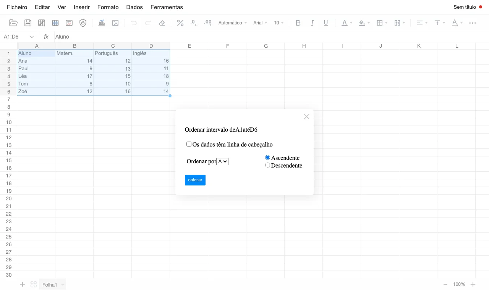
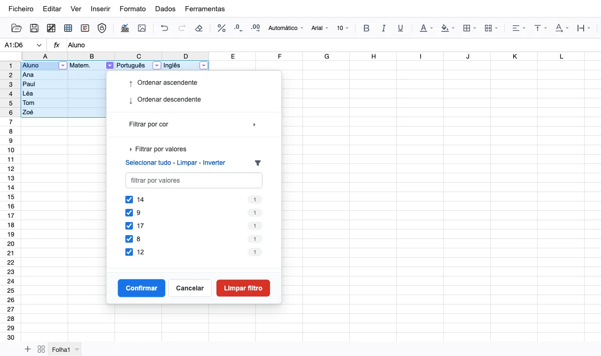
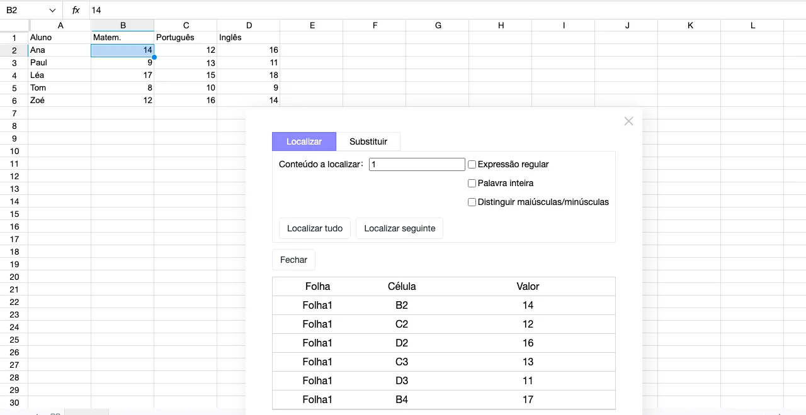

Ordenar, filtrar, procurar
Ordenar
| Comando | Efeito |
|---|---|
| Dados › Ordenar e filtrar › Ascendente, Descendente | ordena a seleção pela sua primeira coluna; também com e com o clique direito |
| clique direito › Ordenar | escolhe a coluna, a ordem, e se a primeira linha é um cabeçalho |

Selecionar toda a tabela, não uma só coluna: as linhas devem ficar inteiras. Um intervalo que contém células unidas não se ordena.
Filtrar
- Selecionar a tabela, incluindo o cabeçalho.
- Dados › Ordenar e filtrar › criar filtro, ou , ou clique direito › Filtrar.
- Clicar na seta de uma coluna.

| No menu de uma coluna | Efeito |
|---|---|
| Ordenar ascendente, Ordenar descendente | ordena as linhas da tabela |
| Filtrar por cor | pela cor do fundo ou do texto |
| Filtrar por valores | marcar os valores a manter; Selecionar tudo, Limpar, Inverter; o campo procura um valor |
| Confirmar | aplica |
| Limpar filtro | retira o filtro da tabela |
As linhas excluídas são ocultadas, não eliminadas. Os filtros de várias colunas acumulam-se. Dados › Ordenar e filtrar › Limpar filtro retira o filtro.
Procurar, substituir
Ctrl F abre Localizar, Ctrl H Substituir.

| Opção | Efeito |
|---|---|
| Expressão regular | o texto procurado é uma expressão regular: ^A encontra o que começa por A |
| Palavra inteira | a célula inteira é igual ao texto |
| Distinguir maiúsculas/minúsculas | distingue maiúsculas e minúsculas |
| Localizar tudo | lista as células encontradas; um clique numa linha leva até ela |
| Localizar seguinte | vai para a seguinte |
| Substituir, Substituir tudo | uma célula, todas |
A procura incide sobre a folha visível.